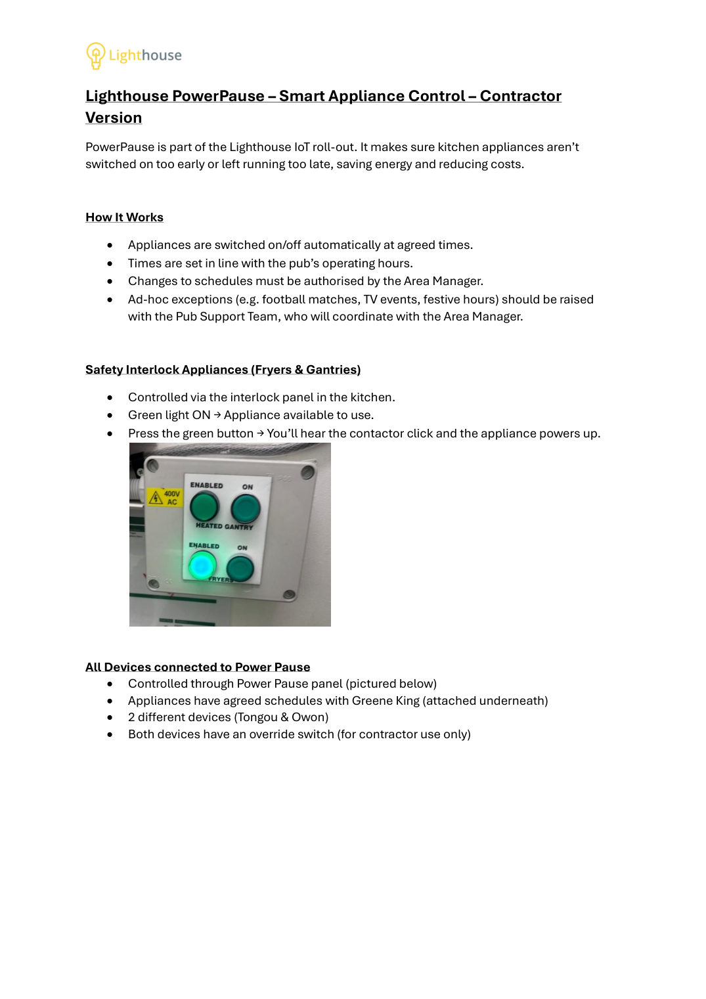
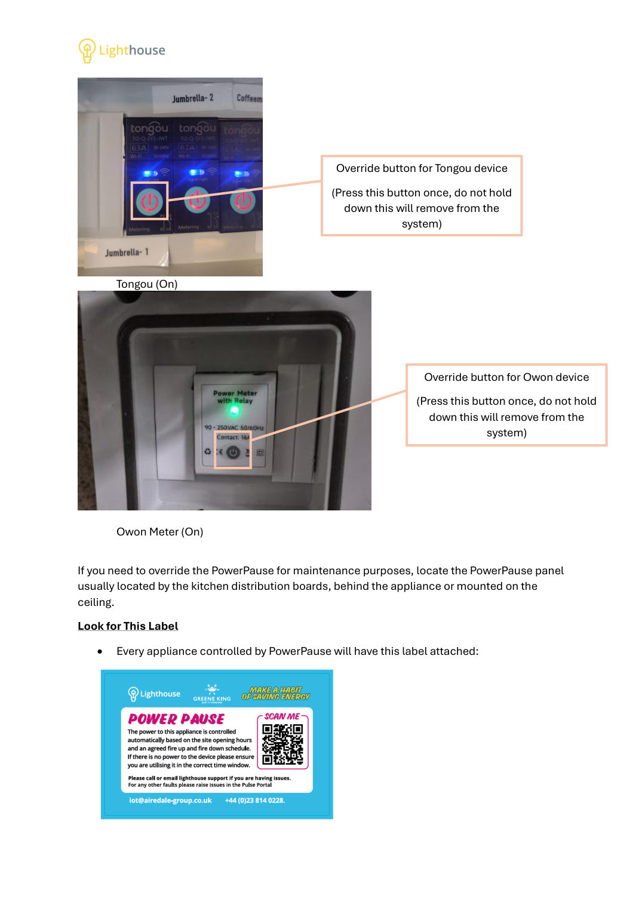
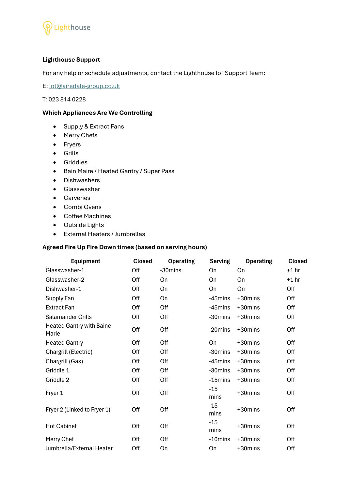
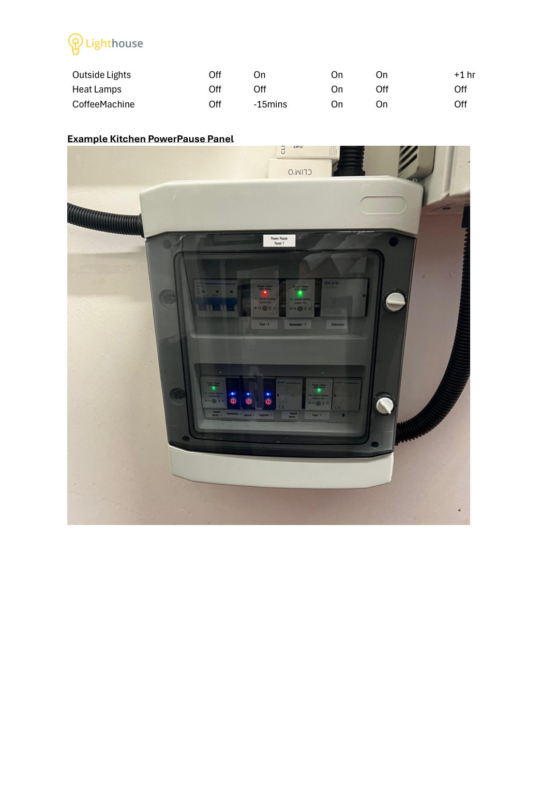
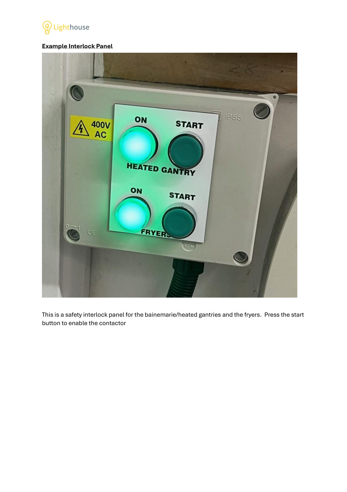
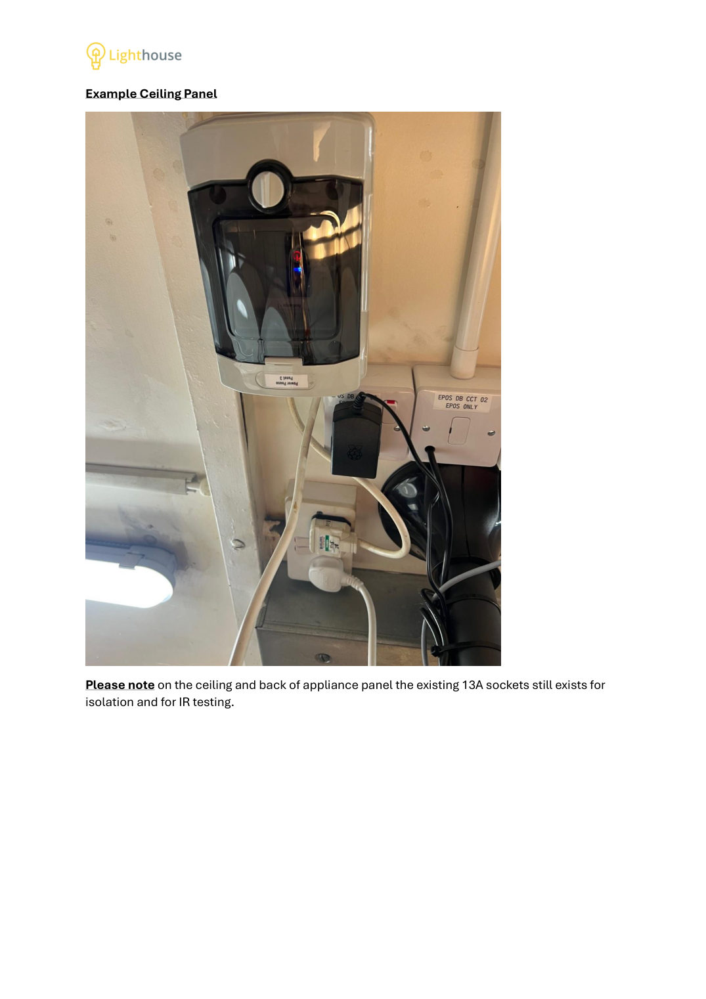
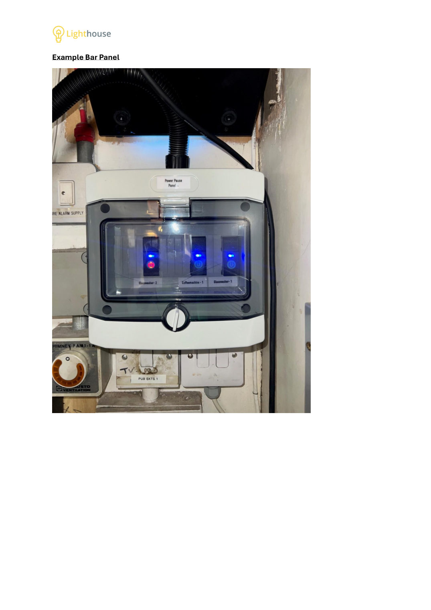
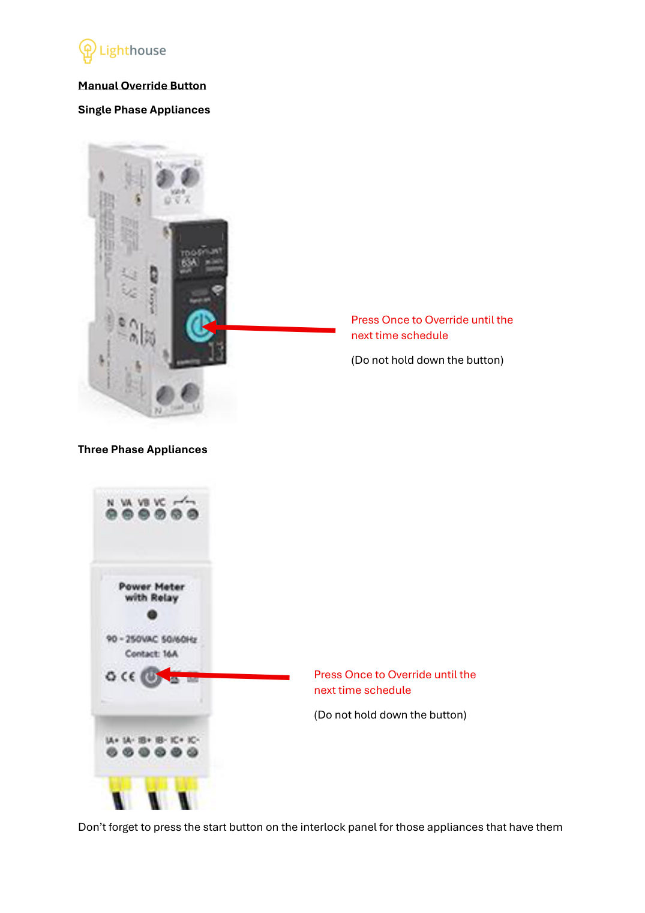
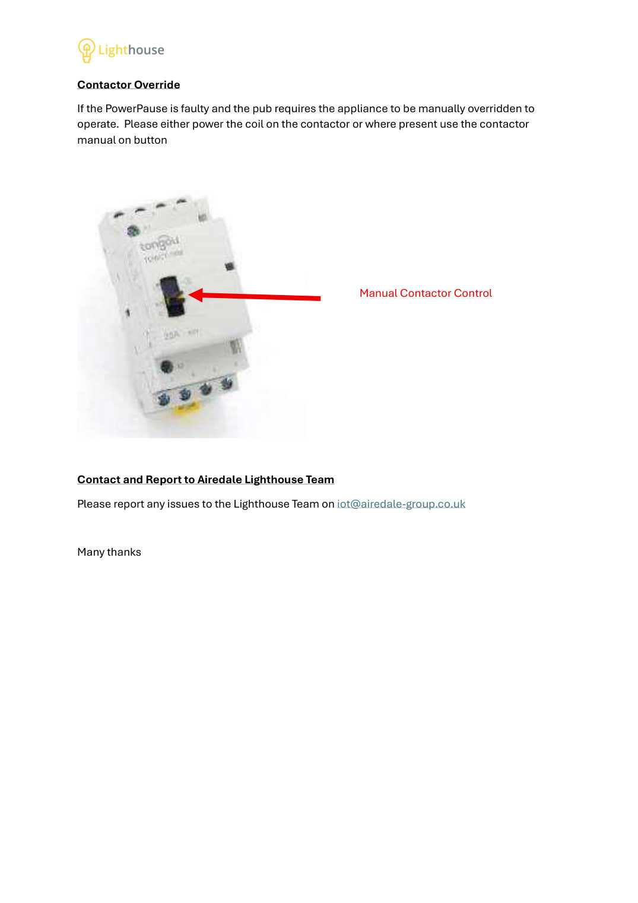

Lighthouse PowerPause: Smart Appliance Control (Contractor Version)
This is the full Lighthouse PowerPause contractor guide, unchanged (9 pages). It shows the PowerPause panels, the Lighthouse label, the interlock start button and the manual override buttons.

Page 1 text
Lighthouse PowerPause – Smart Appliance Control – Contractor Version PowerPause is part of the Lighthouse IoT roll-out. It makes sure kitchen appliances aren’t switched on too early or left running too late, saving energy and reducing costs. How It Works • Appliances are switched on/off automatically at agreed times. • Times are set in line with the pub’s operating hours. • Changes to schedules must be authorised by the Area Manager. • Ad-hoc exceptions (e.g. football matches, TV events, festive hours) should be raised with the Pub Support Team, who will coordinate with the Area Manager. Safety Interlock Appliances (Fryers & Gantries) • Controlled via the interlock panel in the kitchen. • Green light ON → Appliance available to use. • Press the green button → You’ll hear the contactor click and the appliance powers up. All Devices connected to Power Pause • Controlled through Power Pause panel (pictured below) • Appliances have agreed schedules with Greene King (attached underneath) • 2 different devices (Tongou & Owon) • Both devices have an override switch (for contractor use only)

Page 2 text
Tongou (On) Owon Meter (On) If you need to override the PowerPause for maintenance purposes, locate the PowerPause panel usually located by the kitchen distribution boards, behind the appliance or mounted on the ceiling. Look for This Label • Every appliance controlled by PowerPause will have this label attached: Override button for Tongou device (Press this button once, do not hold down this will remove from the system) Override button for Owon device (Press this button once, do not hold down this will remove from the system)

Page 3 text
Lighthouse Support For any help or schedule adjustments, contact the Lighthouse IoT Support Team: E: iot@airedale-group.co.uk T: 023 814 0228 Which Appliances Are We Controlling • Supply & Extract Fans • Merry Chefs • Fryers • Grills • Griddles • Bain Maire / Heated Gantry / Super Pass • Dishwashers • Glasswasher • Carveries • Combi Ovens • Coffee Machines • Outside Lights • External Heaters / Jumbrellas Agreed Fire Up Fire Down times (based on serving hours) Equipment Closed Operating Serving Operating Closed Glasswasher-1 Off -30mins On On +1 hr Glasswasher-2 Off On On On +1 hr Dishwasher-1 Off On On On Off Supply Fan Off On -45mins +30mins Off Extract Fan Off Off -45mins +30mins Off Salamander Grills Off Off -30mins +30mins Off Heated Gantry with Baine Marie Off Off -20mins +30mins Off Heated Gantry Off Off On +30mins Off Chargrill (Electric) Off Off -30mins +30mins Off Chargrill (Gas) Off Off -45mins +30mins Off Griddle 1 Off Off -30mins +30mins Off Griddle 2 Off Off -15mins +30mins Off Fryer 1 Off Off -15 mins +30mins Off Fryer 2 (Linked to Fryer 1) Off Off -15 mins +30mins Off Hot Cabinet Off Off -15 mins +30mins Off Merry Chef Off Off -10mins +30mins Off Jumbrella/External Heater Off On On +30mins Off

Page 4 text
Outside Lights Off On On On +1 hr Heat Lamps Off Off On Off Off CoffeeMachine Off -15mins On On Off Example Kitchen PowerPause Panel

Page 5 text
Example Interlock Panel This is a safety interlock panel for the bainemarie/heated gantries and the fryers. Press the start button to enable the contactor

Page 6 text
Example Ceiling Panel Please note on the ceiling and back of appliance panel the existing 13A sockets still exists for isolation and for IR testing.

Page 7 text
Example Bar Panel

Page 8 text
Manual Override Button Single Phase Appliances Three Phase Appliances Don’t forget to press the start button on the interlock panel for those appliances that have them Press Once to Override until the next time schedule (Do not hold down the button) Press Once to Override until the next time schedule (Do not hold down the button)

Page 9 text
Contactor Override If the PowerPause is faulty and the pub requires the appliance to be manually overridden to operate. Please either power the coil on the contactor or where present use the contactor manual on button Contact and Report to Airedale Lighthouse Team Please report any issues to the Lighthouse Team on iot@airedale-group.co.uk Many thanks Manual Contactor Control